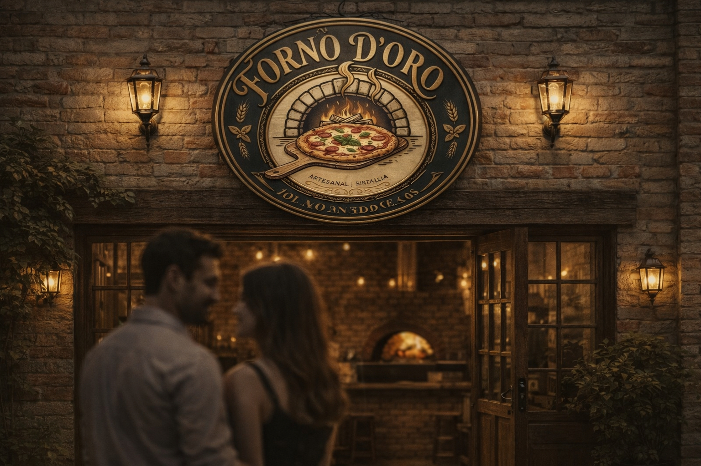

Pizzaria Forno D'Oro
Conheça nossa história e tradição

Nossa História
Fundada em 1936, a Pizzaria Forno D'Oro nasceu da paixão italiana por pizzas artesanais e da tradição de receitas familiares transmitidas de geração em geração. Desde a escolha dos melhores ingredientes frescos até a massa preparada na hora, cada pizza é feita com cuidado e dedicação, mantendo o sabor autêntico da Itália.
🍕
Tradição
❤️
Paixão
🏛️
Legado